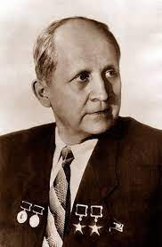

Pavel Sukhoi (1895-1975)
Here's a timeline of Pavel Sukhoi's life:
- July 22, 1895 - Pavel Sukhoi was born in the village of Glubokoe, Vilno province of the Russian Empire (now Vitebsk region, Belarus), in the family of teacher Osip Sukhoi and Elizaveta Gisich. In 1900 the Sukhoi family moved to the city of Gomel, Belarus.
- 1914 - Sukhoi graduated from the Gomel men's gymnasium with a silver medal.
- September 1914 - Sukhoi moved to Moscow to study at the Imperial Moscow University (now Moscow State University). In 1916, upon reaching draft age, Pavel Sukhoi was mobilized for military service in the Russian army.
- In 1920 Sukhoi continued his studies at the Moscow Higher Technical School, which he graduated from in 1925. His graduation project titled "Single-Seat Fighter Jet With a 300 Horsepower Engine" was prepared under the supervision of the renowned aircraft engineer Andrey Tupolev. Upon his successful graduation Sukhoi started his career path as an aircraft engineer in Central Aerohydrodynamic Institute of Moscow.
- During his long successful career Sukhoi supervised design and development of over 50 aircraft models.
- Early models designed by Sukhoi et al. included ANT-3 "Proletary" (first flight in 1925), TB-1 (1925), PS-9 (1929), TB-3 (1930), R-7 (1930).
- Under the general supervision of Andrey Tupolev, Sukhoi worked on fighter jets I-4 (1927), I-14 (1933), long-range bomber DB-2 (1935), aircraft ANT-25 (1933) and ANT-37 (1938).
- In 1936, a competition was announced in the USSR for the development of a multipurpose aircraft. The competition was attended by TsAGI (chief engineer A. N. Tupolev), Central Aircraft Design Bureau (chief engineer N. N. Polikarpov), KhAI (chief engineer I. G. Neman), as well as D. P. Grigorovich, S. A. Kochergin and S. V. Ilyushin. Sukhoi participated in the development of the aircraft on Tupolev’s team. As a result of this project the light bomber SU-2 was born. This was a multipurpose combat aircraft, which served well during the first years of the World War II.
- After the World War II, under the leadership of Pavel Sukhoi, a broad range of powerful, efficient and highly maneuverable combat jets was developed: supersonic ground-attack aircraft model SU-7 (1955), interceptor fighter aircraft models SU-9 (1957), SU-11 (1958), SU-15 (1962), variable-wing ground-attack aircraft SU-17 (1966), deep strike bomber with variable wing sweep SU-24 (1970), attack aircraft SU-25 (1975) and others.
- Sukhoi supervised the early stages of the development of the generation four fighter jets resulting in creation of the famous multirole fighter SU-27 in 1977.
- 1958-1974 - Besides his engineering career, Pavel Sukhoi served as a Deputy of the Supreme Council of the USSR.
- Sukhoi ended his prolific land inspiring ife journey on September 15, 1975, and was buried at the Novodevichy cemetery in Moscow.
Post mortem recognition
- In March 1977, the name of Pavel Sukhoi was given to the design bureau in which he worked (now - a branch of PJSC "Company" Sukhoi "OKB Sukhoi").
- In December 1977, a monument to Sukhoi was erected in Gomel.
- Streets in Moscow, Vitebsk, Gomel , as well as the school in his home town of Glubokoye were named after Pavel Sukhoi.
- The memorial plaque was installed in Moscow at Leninsky Prospekt, 7, where the aircraft designer lived in 1947-1965.
- And finally, in 1995, in commemoration of the 100th anniversary since Sukhoi’s birth, the Gomel State Technical University (Belarus) was named after Pavel Sukhoi.
If you have time, you should read more about this incredible human
being on his
Wikipedia entry.
Here is
list
of Sukhoi aircraft.